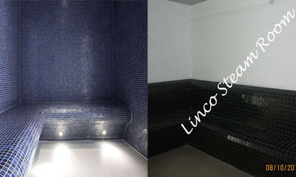

Steam Bath
Domestic Steam Bath
Stress, body pains, dull lifeless skin, ageing process can be best prevented by adding a steam bath to your life.
Linco now offers you the freedom to enjoy a wonderful steam bath whenever you want in the comfort of your own home. It is ideal to incorporate the planning of steam bath provision before construction as it helps in concealing the plumbing and electrical lines.
Steam Room Planning
- Domestic room Steam bath Regular shower enclosure can be converted into steam enclosure by covering the open top part.
- Small tiled room of sizes 3’ x 4’ and 4’ x 5’ can be converted into steam room by fixing false ceiling at 7’ height and glass doors.
- Steam enclosures can also be built around bathtubs and jacuzzi thereby saving valuable space.
- Simple partitioning with false glass ceiling in bathrooms can also be used as steam enclosures.
| Model No. |
Size |
Person |
KW |
| Linco SD1 |
100 (4*4*6=96) |
1 to 2 |
3 |
| Linco SD2 |
150 (5*5*6=150) |
2 to 3 |
4.5 |
| Linco SD4 |
225 (6*6*6.25=225) |
3 to 4 |
9 |
| Linco SD5 |
300 (7*7*6=294) |
4 to 5 |
12 |
| Linco SD6 |
375(7.5*7.5*6.5=365) |
5 to 6 |
15 |
| Linco SD7 |
450 (8*8*7=448) |
6 to 7 |
1 |
Commercial Steam Bath

Commercial steam rooms are found in spas, hotels, health clubs, clubhouses, resorts, and naturopathy centers etc. Typical commercial steam room sizes range from 5 x 5 sq feet to 8 x 8 sq feet with seating capacity of 3 to 8 persons respectively while steam generator capacity ranges from 6 kw to 18 kw.
Planning a commercial steam bath involves the following:
1. Decide the number of persons to be accommodated per steam session.
2. Select the room size and steam generator from the commercial sizing chart given below based on the number of persons.
| Model |
Volume in Cubic Feet |
Person |
KW |
Voltage AC |
Power consumption per 20 min steam session |
| LINCO SC1 |
150(5’x4.5’x6.5’)=147 |
2 to 3 |
6 |
400V/3PH |
1.50 units |
| LINCO SC2 |
225(6’x 5.5’x 6.5’)=215 |
3 to 4 |
9 |
400V/3PH |
2.25 units |
| LINCO SC3 |
300(7’x6.5’x6.6)=296 |
4 to 5 |
12 |
400V/3PH |
3 units |
| LINCO SC4 |
375(7.5*7.5*6.5)=365 |
5 to 6 |
15 |
400V/3PH |
3.75 unit |
| LINCO SC5 |
450(8’x 8’x 7)=448 |
6 to 7 |
18 |
400V/3PH |
4.5 units |
Domestic Steam Bath
Steam Room Construction
Constructing the steam bath
The following are the typical components of a steam room with the recommended materials of construction.
1. Walls: Glazed ceramic tiles on plastered brick masonary/cement boards are ideally recommended. In case other materials like natural stones are used then the steam generator capacity almost doubles.“It is advisable to consult CUSTOMER CARE for selecting the correct steam generator in such cases”.
2. Flooring: Tiled floor with anti skid is ideal
3. Door: 5 mm toughened glass in aluminum frame or 5mm wire glass in aluminum frame. Take care to ensure that there are no leakages in the steam door
4. Ceiling: 5 mm toughened glass in aluminum frame/ 5 mm wire glass in aluminum frame with an average slope of 6.5 feet height are recommended. The ceiling must be sealed with silica sealant to prevent leakages. The slope allows water from steam condensation to flow down the walls without dripping onto the bathers. Ideal slope is two inch in one running feet length.
5. Floor Drain: Provide a floor drain inside the steam room for cleaning purpose.
6. Exhaust Fan: Install an exhaust outside the steam room to provide protection for the walls, furniture etc from moisture.
7. Lighting: the following options can be considered:
- Low voltage DC lights inside the steam rooms with vapor sealing
- AC lights above the false glass ceiling. Make provision for removing the glass ceiling on one part.
- Focus lights outside the steam room
8. Seating: seating can be in brick masonry with tiles or natural stones.
The following are the requirements for installation of the
Steam generator:
9. Location: The steam generator is wall mounted and an area of 2.5 x 1.5 should be provided at 6 feet above ground level. The steam generator must be located as close to the steam room/ enclosure as possible.
10.Plumbing:
- i. Water inlet near the steam unit. Water line can be of 0.5 inch CPVC/GI pipe.
-
ii. Steam line. For steam generators from 6 KW TO 9 KW
provide one 0.5 inch Copper / SS / GI pipe as close to the steam generator as possible. For 15 KW and 18 KW units provide 1.0-inch Copper / SS / GI pipe. The steam outlet into the steam room should be at 3 inches above the ground level, away from the walking and seating area.
- iii. Drain line: The wastewater in the steam generator has to be discharged at frequent intervals. This will reduce scale formation and allow fresh water to enter the steam generator. The drain can be operated manually and automatically. Provide a 0.5-inch GI pipe connected to drain to flush out spent water. As wastewater is flushed out by gravity make sure the drain line is located below the steam generator.
11. Electrical:
- Three phase power supply (720 / 4 sq mm / 6 sq mm wiring) ground earthing and neutral wiring.
- MCBs of required capacity.
- Conduits for sensor wiring and steam controller box.
Steam Bath Benefits
1. Improved blood circulation: Steam bath increases and improves the rate of blood circulation and breathing.
2. Weight loss: Steam / Sauna is similar to mild exercise; it burns about 300 calories per average session. Regular steam bath combined with a healthy diet and moderate exercise will help you lose weight and stay fit and healthy.
3. Skin cleansing: A profuse steam bath induced sweat followed by a shower cleanses your skin far more thoroughly than just taking a shower. It makes it soft and healthy with immediately noticeable effects.
4. Body relaxation: Stress build-up creates tension in the body manifesting in various aches and pains. The heat and humidity of the steam/sauna diffuses the pain and relaxes tired muscles. A steam bath or a sauna bath sauna in the evening will leave tense muscles and sore limbs totally relaxed. Steam bath/ Sauna bath also temporarily relieves arthritic pain.
5. Mind relaxation: Regular steam bath users all agree that it effectively helps relieve physical and mental fatigue and stress.
6. Rejuvenates: Steam bath enhances circulation and oxygenates the cells, tissues and organs. It increases the body's ability to produce energy, which promotes healing. At the same time, heating the tissues speeds up the metabolism. Your cells are gradually capable of eliminating toxins much more effectively.
Linco Super Steamer
Model No: LSS 091
Features:
- Steam Bath
- Timer Control
- Option to have herbal & Aroma Steam
- Light weight, Easily movable
- Adjustable rotating chair
- Steam Chamber size: 3.5(L) x 2.5(W) x 4(H)
Benefits of Steam Bath:
- Make your sking look young, soft, shiny and healthy
- Flush out pollutants which are deposited on skin pores due to air pollution from vehicles.
- Helps in weight reduction
- It refreshes Body & soul
- Helps in burning calories and reduce fat
- Relieves Cold, Cough, Sinus problems.
Aroma Oils
Aroma oils, often used to benefit steam room sessions which are extracted from flowers, leaves, bark, wood, seeds, roots and peel, to promote a persons health and mood. These essential oils are absorbed into the bloodstream and metabolized in the body, resulting in many health benefits.
Steam Bath Benefits
FAQ's
- What do I need a steam bath?
Modern lifestyle is characterized by heavy use of cosmetics, which clog the sweat pores. Dust and smoke pollution in transit also block the pores. Air-conditioned environment prevents the natural sweating process. A steam bath session helps to open up the pores and eliminates the toxins that can cause diseases. The skin gets cleansened and moisturized which gives a natural glow. It improves blood circulation which helps relieves body pains, improve skin and muscle tone. Steam bath can help to clear sinuses and nasal passages (similar to the affects of a humidifier) and can help you breathe easier. After taking a steam bath, take a hot bath for a good night sleep or a cold shower to feel invigorated.
- What is the difference between a sauna and a steam bath?
Hot rocks that emit a long-lasting heat, heat Sauna’s air. Because the humidity in a sauna is low, saunas are usually made of softwoods. In a steam room, the water vapor carries the heat. The wall construction is typically acrylic, tile, marble, or other stone. Steam rooms are much cooler than saunas although they often feel warmer.
- Won't the steam ruin my bathroom walls?
Your steam bath tub or shower enclosure needs to be sealed tightly with vapor tight doors that go all the way to the ceiling. Also, your walls and ceiling must have the correct construction material such as acrylic, tile, marble, etc. (see list of construction materials)
- Can a steam bath cure a cold?
Probably not. But it's certainly help, especially for clearing sinuses and nasal passages to make breathing easier. Remember the old method of treating a cold by breathing hot steam from a pot with a towel over your head?
- Will a steam bath ruin my hair?
Steam is moisture so your hair will get as wet as if you washed it.
- Do doctors recommend steam bathing?
Frequently. Steam bathing is known to be extremely helpful for people with respiratory ailments such as asthma, bronchitis, allergies, etc. It can also help soothe muscles, rheumatism, bursitis, etc.
- How do I determine the size of the steam generator I need?
Multiply the room length, width and height to calculate the room cubic footage. Then, find the correct generator on the Linco generator sizing charts.
- How does steam-bathing rate for water use efficiency?
Very high. A Linco domestic series generator only uses about 1.5 liters of water during a 15-minute steam bath. By comparison, a shower uses up to 40 gallons during the same amount of time.
- How do I know if I have room for a steam bath and where does the steam generator get installed?
Space is seldom a problem. The steam generators are roughly the size of a small toolbox and can be installed up to 25 feet away from the steambath area. Only the small steam-head is visible in the bath or shower. The actual steam generator can be mounted out of sight in the attic, basement, and adjoining closet or under the sink. No additional floor space is needed if you convert an existing bath or shower.
- Why are steam baths only recommended to be 7' in height?
Since heat and steam rises, it is recommended to build a steam bath no higher than 7' in height to avoid heating up wasted space and having the entire steam rise to a part of the room that you are not sitting in.
- Why is it suggested to have a slope to the ceiling?
Steam rises in a steam room. If the ceiling is flat, then steam droplets will drop on the steam bather. With a sloped ceiling, the water vapor drains down the ceiling and down the walls.
- What is the average heat-up time for a steam bath?
An average steam bath will be ready for use within 2-5 minutes.
Linco Home steamer
Linco Home steamer
Model No: LHS 118
Features:
- Steam Bath
- Timer Control
- Option to have herbal and Aroma Steam
- Light weight, Easily movable
- Three level seating arrangement
- Steam chamber size: 3’.5” x 3’.2” x 3’.5”
Steam Bath Benefits :
- Relaxes mind & body
- Increases Blood Circulation
- Relieves cough & cold
- Reduces body Pains & Joint stiffness
- Deep cleans & Eliminates toxins
- Flushes out dust & cosmetics.
- Reduces the risk of alcoholism.
- Encourages weight loss & Burns fat
Linco Foldable Steam Cabin
Model No: LFS 052
Features:
- Steam Bath
- Timer Contro
- Option to have herbal & Aroma Steam
- Easily movable
- Steam Chamber size: 2.7(L) x 2.8(W) x 3.8(H)
Benefits steam bath:
- Releives from stress, body pains
- Releives from cough, cold
- Helps mind and body to releive from stress & relax muscles
- Helps in weight reduction by burning fat